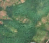
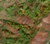

2,9 ha de pădure schimbată lângă Măru
Între 8 august 2026 și 10 august 2026, pe aproximativ 2,9 ha de pădure din comuna Zăvoi, lângă Măru, județul Caraș-Severin, imaginile Sentinel-2 arată că vegetația a dispărut sau s-a schimbat puternic. E o schimbare care merită verificată.
Autorizația de tăiere
de confirmat pe poze
N-am găsit o autorizație care să acopere zona, dar nu putem spune ce s-a întâmplat aici: analistul AI fie n-a văzut încă pozele, fie le-a văzut și nu e sigur. Nu dăm roșu pe o bănuială, și nici nu spunem că e în regulă. Analistul n-a putut spune ce s-a întâmplat aici din poze. Rămâne de verificat cu o imagine mai bună.
Ce se vede în poze: În poza detaliată zona marcată era o poiană cu iarbă și câțiva copaci, nu o pădure deasă. În poza «după» terenul e roșcat-brun, dar la fel sunt multe alte versante din jur, așa că nu pot spune dacă e toamnă, foc sau tăiere.


Înainte și după: Copernicus Sentinel-2, 10 m pe pixel, conturul zonei cu portocaliu. Poza detaliată (Esri World Imagery) e de acum 1–4 ani: arată ce era acolo înainte, nu tăierea.
Pe scurt
- Identificator
- 20260810_45469_22441
- Locul
- Măru, comuna Zăvoi, județul Caraș-Severin (SIRUTA 54617)
- Coordonate (centru)
- 45.46848, 22.44087 · Google Maps · OpenStreetMap
- Suprafața
- 2,9 ha (din pixeli de 10 m; ± câțiva pixeli pe margine)
- Ultima imagine cu pădurea întreagă
- 8 august 2026
- Prima imagine cu schimbarea
- 10 august 2026
- Imagini în care se vede schimbarea
- 16
- Cât de sigur e semnalul din satelit
- medie
- Terenul
- pădure privată, după amenajamentul silvic publicat
- Pădure pierdută în jur, alți ani
- 2001, 2007 (Hansen)
- Garda Forestieră
- Timișoara
Dacă vrei să verifici sau să sesizezi
- Pădurile din județul Caraș-Severin sunt în grija Gărzii Forestiere Timișoara, care controlează tăierile și dă amenzile.
- Formularul Gărzii Forestiere Naționale primește sesizări și fără nume. Trimite linkul acestei pagini, coordonatele și pozele. Dacă tăierea e în desfășurare, sună la 112.
- Autorizațiile și transporturile de lemn se pot căuta în Inspectorul Pădurii.
Pagina arată ce se vede din satelit și ce scrie în registrul public; nu e o dovadă în sine.
Cum citezi zona
Linkul acestei pagini nu se schimbă. Dacă zona iese vreodată de pe hartă, pagina rămâne, cu data și cu ce știam despre ea.
Pădurea RO, zona 20260810_45469_22441: 2,9 ha, Măru, comuna Zăvoi, județul Caraș-Severin; schimbare văzută din satelit între 8 august 2026 și 10 august 2026. https://iliemihai.github.io/padurea-ro/zona/20260810_45469_22441/ (consultat la [data]). Date: CC BY 4.0.
Datele zonei: GeoJSON · toate zonele: date deschise · licența CC BY 4.0.
Istoricul zonei pe hartă
Starea se poate schimba când registrul publică o autorizație sau când analistul vede poze mai bune. O ținem aici, ca un link citat să arate și ce spuneam atunci.
Pe hartă cel târziu din 5 noiembrie 2026.
- 5 noiembrie 2026 – azi · de confirmat pe poze
Detalii tehnice, pentru verificare
De ce acest nivel de încredere:
- văzută schimbată în 16 imagini diferite
- AI-ul vede pădure dispărută
- în poze, zona se schimbă vizibil față de pădurea din jur
Ce a văzut analistul cu context: Poza detaliată din 2019 arată o poiană cu coroane răzlețe în interiorul outline-ului, iar «înainte» din august 2026 are deja pete deschise la culoare acolo. În «după» și în vederea largă, tonul roșu-brun apare pe mai multe fâșii de versant, cu margini neregulate, iar vegetația din văi rămâne verde, ceea ce poate indica fie culori de toamnă, fie arsură. Nu există dovezi clare de cioate, resturi de exploatare sau drumuri de colectare. Lipsa autorizației de tăiere nu poate susține singură o acuzație de tăiere rasă.
- Placa Sentinel-2
- 34TFR
- NDVI de referință
- 0.84
- NBR de referință
- 0.59
- Scăderea în pădurea din jur
- 0.12
- Persistență
- 0.92
- NDVI / NBR după
- 0.44 / 0.061
- Analistul de zi (model)
- taiere · 0.8 · claude-haiku-5-5
- Analistul cu context (model)
- neclar · 0.35
Cum se calculează fiecare: metodologia.
Pune harta zonei într-un articol
Copiază codul în articol (merge în majoritatea site-urilor de știri). Sau pune doar linkul: WhatsApp, Facebook și X arată singure poza zonei.